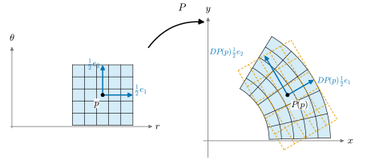

2.1 The Total Derivative: Differentiation as Linear Approximation
Goals
- map \(F\colon U \to \R^m\)이 한 점에서 미분가능하다는 것을 “linear map으로 근사된다”는 말로 정확히 진술하고, total derivative \(DF(p)\)가 하나로 정해짐을 보일 수 있다.
- partial derivative, directional derivative, Jacobian matrix를 정의하고, total derivative의 행렬이 Jacobian matrix임을 증명할 수 있다.
- partial derivative가 존재해도 미분가능하지 않은 예를 들 수 있고, partial derivative가 연속이면 미분가능하다는 판정법을 쓸 수 있다.
- 이 장의 기준 map인 polar coordinate map, 그리고 원·helix·sphere의 standard parametrization의 total derivative를 계산할 수 있다.
Prerequisites
- Example 1.1.2 (\(\R^n\))와 standard basis \(e_1, \dots, e_n\) (Section 1.1)
- Definition 1.2.1 (linear map), Definition 1.2.13 (matrix of a linear map), Proposition 1.2.14
- \(\R^n\)의 Euclidean inner product \(\inner{x}{y} = \sum_i x^i y^i\)과 norm \(\abs{x} = \sqrt{\inner{x}{x}}\) (Definition 1.5.4), Theorem 1.5.5 (Cauchy–Schwarz inequality), Corollary 1.5.6 (triangle inequality, distance), Proposition 1.5.7 (linear maps are bounded)
- 1변수 미적분: 도함수, 평균값 정리
Motivation
Chapter 1에서 vector space 사이의 linear map을 정의하고, basis를 고르면 linear map이 행렬이 됨을 보았다(Section 1.2). Chapter 1의 끝에서 예고했듯이 이 장의 첫 주제는 휘어진 map을 한 점 근처에서 linear map으로 근사하는 것이다. 미분이 바로 그 linear map이다. 1변수 미적분에서 \(f\)가 \(a\)에서 미분가능하면
이다. 즉 \(a\) 근처에서 \(f\)는 “상수 \(f(a)\) 더하기 linear map \(h \mapsto f'(a)\,h\)”로 근사되고, 그 오차는 \(h\)보다 빠르게 작아진다. 그래프로 보면 곡선을 한 점에서 접선으로 바꾸는 것이다.
미분기하가 하는 일도 이것이다. 곡선은 한 점에서 접선으로, surface는 한 점에서 tangent plane으로 근사하고, 그 곧은 대상에서 linear algebra로 계산한다. 그러려면 변수가 여럿이고 값도 여럿인 map \(F\colon \R^n \to \R^m\)에 대해 (2.1.1)과 같은 근사를 말할 수 있어야 한다. 이때 \(f'(a)\)라는 수 자리에 들어갈 것은 \(\R^n\)에서 \(\R^m\)으로 가는 linear map이다. 이 절에서는 이 linear map, 즉 total derivative를 정의하고 그것을 partial derivative로 계산하는 방법을 정리한다.

Preliminaries: distance, balls, open sets, limits, closure, compact sets, completeness
극한을 말하려면 “가깝다”는 말이 필요하다. 이 장은 topology를 다루는 Chapter 3보다 앞에 있으므로, 미적분학에서 쓰던 다음 약속을 그대로 쓴다. 이 개념들은 Chapter 3에서 metric space와 topological space의 언어로 정식으로 정의한다(Definition 3.1.5, Definition 3.1.15, Definition 3.2.1, Proposition 3.2.3). 여기서는 이 장에 필요한 만큼만 상기한다.
- Distance. 두 점 \(x, y \in \R^n\) 사이의 거리는 Euclidean distance \(\abs{x - y}\)이고, triangle inequality \(\abs{x - z} \le \abs{x - y} + \abs{y - z}\)이 성립한다 (Corollary 1.5.6).
- Ball. \(p \in \R^n\)과 \(r \gt 0\)에 대하여 \(B_r(p) = \{x \in \R^n : \abs{x - p} \lt r\}\)를 \(p\)를 중심으로 하는 반지름 \(r\)인 (open) ball이라 한다.
- Open set. \(U \subseteq \R^n\)의 모든 점 \(p\)에 대하여 \(B_r(p) \subseteq U\)인 \(r \gt 0\)이 있으면 \(U\)를 open set이라 한다. ball, \(\R^n\) 자신, 반평면 \(\{(r, \theta) : r \gt 0\}\)은 open set이고, 닫힌 반평면 \(\{(r, \theta) : r \ge 0\}\)은 open set이 아니다(\(r = 0\)인 점 둘레의 어떤 ball도 \(r \lt 0\)인 점을 포함한다). \(p\)를 포함하는 open set을 \(p\)의 neighborhood라 부른다.
- Limits and continuity. \(F\colon U \to \R^m\)이고 \(p \in U\)일 때 \(\lim_{x \to p} F(x) = q\)는 “모든 \(\varepsilon \gt 0\)에 대하여 어떤 \(\delta \gt 0\)이 있어서, \(x \in U\)이고 \(0 \lt \abs{x - p} \lt \delta\)이면 \(\abs{F(x) - q} \lt \varepsilon\)”이라는 뜻이다. \(\lim_{x \to p} F(x) = F(p)\)이면 \(F\)가 \(p\)에서 연속이라 한다.
- Componentwise limits. \(v \in \R^m\)의 각 성분은 \(\abs{v^i} \le \abs{v} \le \abs{v^1} + \dots + \abs{v^m}\)을 만족한다(첫 부등식은 \(\abs{v}^2\)이 \((v^i)^2\)을 포함하는 합이기 때문이고, 둘째는 \(v = \sum_i v^i e_i\)에 triangle inequality를 쓴 것이다). 따라서 \(F = (F^1, \dots, F^m)\)이 \(q\)로 수렴할 필요충분조건은 각 성분 \(F^i\)가 \(q^i\)로 수렴하는 것이다.
- Continuous maps and open sets. \(U \subseteq \R^n\)이 open set이고 \(F\colon U \to \R^m\)이 연속이며 \(V \subseteq \R^m\)이 open set이면 \(F^{-1}(V) = \{x \in U : F(x) \in V\}\)는 open set이다. \(x \in F^{-1}(V)\)이면 \(B_\varepsilon(F(x)) \subseteq V\)인 \(\varepsilon \gt 0\)이 있고, \(x\)에서의 연속성에서 \(x' \in U\), \(\abs{x' - x} \lt \delta\)이면 \(\abs{F(x') - F(x)} \lt \varepsilon\)인 \(\delta \gt 0\)이 있다. \(\delta\)를 줄여 \(B_\delta(x) \subseteq U\)가 되게 하면 \(B_\delta(x) \subseteq F^{-1}(V)\)이기 때문이다. (Chapter 3은 이 성질을 연속의 정의로 삼는다.)
- Closed sets and bounded sets. 여집합 \(\R^n \setminus A\)가 open set이면 \(A\)를 closed set이라 한다. closed ball \(\{x : \abs{x - p} \le r\}\)과 닫힌 직사각형 \([a^1, b^1] \times \dots \times [a^n, b^n]\)은 closed set이다. 여집합의 점 \(x\) 둘레에, 앞의 경우는 반지름 \(\abs{x - p} - r\)인 ball이, 뒤의 경우는 구간 \([a^i, b^i]\)를 벗어난 좌표 \(x^i\)에서 그 구간까지의 거리를 반지름으로 하는 ball이 여집합에 들어가기 때문이다. 유한개의 closed set의 합집합도 closed set이다(여집합의 점마다 각 여집합에서 잡은 반지름들 가운데 가장 작은 것을 쓴다). closed set \(A\) 안의 수열이 수렴하면 그 극한도 \(A\)에 있다. 극한이 open set \(\R^n \setminus A\)에 있다면 그 둘레의 어떤 ball이 \(A\)와 만나지 않는데, 수열의 항은 결국 그 ball에 들어가기 때문이다. 어떤 ball \(B_R(0)\)에 포함되는 집합을 bounded라 한다.
- Interior, boundary, closure. \(D \subseteq \R^n\)이고 \(p \in \R^n\)이라 하자. 어떤 ball \(B_r(p)\)가 \(D\)에 포함되면 \(p\)를 \(D\)의 interior point라 하고, interior point 전체를 \(D\)의 interior라 한다. \(p\)를 중심으로 하는 모든 ball이 \(D\)의 점과 \(D\) 밖의 점을 함께 포함하면 \(p\)를 \(D\)의 boundary point라 하고, boundary point 전체를 \(\partial D\)로 쓴다. \(\overline{D} = D \cup \partial D\)를 \(D\)의 closure라 한다. 정의에서 곧바로 \(\R^n\)의 각 점은 \(D\)의 interior point, \(\R^n \setminus D\)의 interior point, \(D\)의 boundary point 가운데 정확히 하나다. 앞의 둘이 모두 아니라는 것은 \(p\)를 중심으로 하는 모든 ball이 \(D\)의 점과 \(D\) 밖의 점을 함께 포함한다는 뜻이고, 앞의 둘이 동시에 성립하면 \(p\)가 \(D\)와 \(\R^n \setminus D\)에 함께 속하게 되기 때문이다. 따라서 \(\overline{D}\)의 여집합은 \(\R^n \setminus D\)의 interior이고, 이것은 open set이다. \(B_r(q) \subseteq \R^n \setminus D\)이고 \(x \in B_r(q)\)이면 triangle inequality에서 \(B_{r - \abs{x - q}}(x) \subseteq B_r(q)\)이므로 \(x\)도 interior point이기 때문이다. 즉 \(\overline{D}\)는 closed set이다. 또 \(D \subseteq B_R(0)\)이고 \(\abs{q} \gt R\)이면 ball \(B_{\abs{q} - R}(q)\)는 \(B_R(0)\)과 만나지 않으므로(그 점 \(y\)는 \(\abs{y} \ge \abs{q} - \abs{y - q} \gt R\)) \(q \notin \overline{D}\)이다. 즉 \(D\)가 bounded이면 \(\overline{D}\)도 bounded이다. Chapter 3은 closure를 topological space에서 “\(D\)를 포함하는 모든 closed set의 교집합”으로 정의한다(Definition 3.1.15). \(\R^n\)에서 그 정의가 여기의 \(D \cup \partial D\)와 같은 집합을 준다는 것은 Proposition 3.1.27에서 증명한다.
- Three facts about compact sets. 이 장에서는 미적분학의 관습대로 \(\R^n\)의 bounded closed set을 compact set이라고도 부른다. compact set \(K\)에 관한 다음 세 사실은 미적분학에서 알려진 사실로 받아들인다. (i) Heine–Borel theorem. open set들이 \(K\)를 덮으면 그 가운데 유한개가 이미 \(K\)를 덮는다. (ii) 최댓값·최솟값 정리. \(K \neq \varnothing\)이면 \(K\) 위의 연속함수는 최댓값과 최솟값을 가진다. 특히 bounded이다. (iii) Uniform continuity. \(K\) 위의 continuous map \(F\)는 uniformly continuous이다. 즉 모든 \(\varepsilon \gt 0\)에 대하여 어떤 \(\delta \gt 0\)이 있어서, \(x, x' \in K\)이고 \(\abs{x - x'} \lt \delta\)이면 \(\abs{F(x) - F(x')} \lt \varepsilon\)이다. Chapter 3은 compactness를 open cover로 정의하고(Definition 3.6.1) 이 세 사실을 증명한다 (Theorem 3.6.7(Heine–Borel), Theorem 3.6.10(최댓값·최솟값), Corollary 3.6.19). 이 장의 증명이 Chapter 3의 결과를 쓰는 곳은 이 세 사실과 아래의 intermediate value theorem (v)뿐이다.
- Completeness. \(\R^n\)의 수열 \((x_k)\)가 “모든 \(\varepsilon \gt 0\)에 대하여 어떤 \(N\)이 있어서 \(k, m \ge N\)이면 \(\abs{x_k - x_m} \lt \varepsilon\)”을 만족하면 Cauchy sequence라 한다. (iv) \(\R^n\)의 completeness. \(\R^n\)의 Cauchy sequence는 수렴한다. 이것도 미적분학에서 알려진 사실로 받아들인다. (각 성분 \((x_k^i)\)는 \(\abs{x_k^i - x_m^i} \le \abs{x_k - x_m}\)이므로 \(\R\)의 Cauchy sequence이고, 실수의 completeness에 의해 수렴한다. 그러면 위의 성분별 극한에 의해 \((x_k)\)도 수렴한다.) Chapter 3은 이 사실을 다루지 않는다. 이 장에서는 contraction mapping principle의 증명에 쓴다.
- Intermediate value theorem. (v) 구간 \(I \subseteq \R\) 위의 연속함수 \(f\)가 \(a, b \in I\)에서 \(f(a) \lt c \lt f(b)\)이면 \(f(t) = c\)인 \(t \in I\)가 있다. 따라서 연속함수에 의한 구간의 image는 구간이다. 이것도 1변수 미적분학에서 알려진 사실로 받아들인다. Chapter 3은 이것을 connectedness로 증명한다(Corollary 3.7.6).
미분을 정의할 때 정의역을 open set으로 두는 이유는 간단하다. \(p \in U\)이고 \(U\)가 open set이면 \(\abs{h}\)가 충분히 작은 모든 \(h\)에 대하여 \(p + h \in U\)이다. 그래서 \(F(p + h)\)를 모든 방향의 작은 \(h\)에 대해 생각할 수 있다.
The total derivative
Equation (2.1.1)의 “나머지를 \(h\)로 나눈 것이 \(0\)으로 간다”를 벡터로 옮기면, 나눗셈 대신 길이의 비를 쓰게 된다.
Definition 2.1.1 (differentiability and total derivative). \(U \subseteq \R^n\)이 open set이고 \(F\colon U \to \R^m\), \(p \in U\)라 하자. linear map \(A\colon \R^n \to \R^m\)이 있어서
이면 \(F\)가 \(p\)에서 differentiable(미분가능)하다고 하고, \(A\)를 \(p\)에서 \(F\)의 total derivative(전미분)이라 하여 \(DF(p)\)로 쓴다. \(F\)가 \(U\)의 모든 점에서 미분가능하면 \(U\)에서 미분가능하다고 한다.
Equation (2.1.2)의 극한은 \(h \in \R^n\)에 대한 극한이고, \(h\)는 \(p + h \in U\)이고 \(h \neq 0\)인 벡터 위를 움직인다. 흔히 나머지 \(R(h) = F(p + h) - F(p) - DF(p)h\)를 두고
로 쓴다. (2.1.1)과 똑같은 모양이다. 정의에 “\(A\)가 있어서”라고 썼으므로, 먼저 그런 \(A\)가 하나뿐인지 확인해야 \(DF(p)\)라는 이름을 붙일 수 있다.
Proposition 2.1.2 (uniqueness of the total derivative). Definition 2.1.1의 조건을 만족하는 linear map \(A\)는 많아야 하나다.
Proof idea: 두 linear map \(A, B\)가 모두 조건을 만족하면 \((A - B)h\)도 \(\abs{h}\)보다 빨리 작아진다. linear map은 늘이고 줄이는 비율이 방향마다 일정하므로 \(A - B = 0\)일 수밖에 없다.
Proof. \(A\)와 \(B\)가 모두 (2.1.2)를 만족한다고 하자. \(v \in \R^n\)이 \(0\)이 아닌 벡터라 하자. \(U\)가 open set이므로 \(\abs{t}\)가 충분히 작으면 \(p + tv \in U\)이다. \(h = tv\) (\(t \neq 0\))라 두면 triangle inequality에 의해
\[ \frac{\abs{(A - B)h}}{\abs{h}} \le \frac{\abs{F(p + h) - F(p) - Bh}}{\abs{h}} + \frac{\abs{F(p + h) - F(p) - Ah}}{\abs{h}} \]
이고 \(t \to 0\)일 때 \(h \to 0\)이므로 우변은 \(0\)으로 간다. 그런데 linearity에 의해 좌변은 \(\abs{t(A - B)v}/\abs{tv} = \abs{(A - B)v}/\abs{v}\)로 \(t\)에 무관하다. \(t\)에 무관한 수가 \(0\)으로 가므로 \((A - B)v = 0\)이다. \(v\)는 임의였으므로 \(A = B\)이다.
Example 2.1.3 (affine maps and one-variable functions). (a) \(m \times n\) 행렬 \(A\)와 \(b \in \R^m\)에 대하여 \(F(x) = Ax + b\)라 하자. 모든 \(p\)와 \(h\)에 대하여 \(F(p + h) - F(p) - Ah = 0\)이므로 (2.1.2)의 분자는 늘 \(0\)이다. 따라서 \(F\)는 모든 점에서 미분가능하고 \(DF(p) = A\)이다. 특히 linear map의 total derivative는 어느 점에서나 그 자신이다. constant map(\(A = 0\))의 total derivative는 \(0\)이다.
(b) \(n = m = 1\)이라 하자. \(\R\)에서 \(\R\)로 가는 linear map은 어떤 수 \(c\)를 곱하는 map \(h \mapsto ch\)뿐이다(Proposition 1.2.4에서 \(c\)는 \(1\)의 image이다). 이때 (2.1.2)는 \(\abs{f(a + h) - f(a) - ch}/\abs{h} = \abs{(f(a + h) - f(a))/h - c} \to 0\), 즉 \(\lim_{h \to 0} (f(a + h) - f(a))/h = c\)라는 뜻이다. 따라서 \(f\)가 Definition 2.1.1의 뜻으로 미분가능할 필요충분조건은 미적분학의 뜻으로 미분가능한 것이고, 그때 \(Df(a)\)는 \(f'(a)\)를 곱하는 map이다. \(1 \times 1\) 행렬을 수와 같게 보면 \(Df(a) = f'(a)\)이다.
Example 2.1.4 (squared norm, inner product, scalar product). 다음 세 map은 모든 점에서 미분가능하다. 모두 “나머지가 증분의 제곱 정도”라는 같은 방식으로 확인한다.
(a) \(f\colon \R^n \to \R\), \(f(x) = \abs{x}^2 = \inner{x}{x}\). inner product의 bilinearity와 symmetry에 의해 \[ f(p + h) = \inner{p + h}{p + h} = \inner{p}{p} + 2\inner{p}{h} + \inner{h}{h} \] 이다. \(h \mapsto 2\inner{p}{h}\)는 linear map이고 나머지는 \(\abs{h}^2\)이므로 \(\abs{h}^2/\abs{h} = \abs{h} \to 0\)이다. 따라서 \(Df(p)h = 2\inner{p}{h}\)이다.
(b) \(\beta\colon \R^m \times \R^m \to \R\), \(\beta(y, z) = \inner{y}{z}\). 여기서 \(\R^m \times \R^m\)을 \(\R^{2m}\)과 같게 보고 점을 \((y, z)\), 증분을 \((k, l)\)로 쓴다. \[ \beta(y + k, z + l) - \beta(y, z) = \inner{k}{z} + \inner{y}{l} + \inner{k}{l} \] 이다. \((k, l) \mapsto \inner{k}{z} + \inner{y}{l}\)은 linear이고, 나머지는 Cauchy–Schwarz inequality와 \(\abs{k}, \abs{l} \le \abs{(k, l)}\)에 의해 \(\abs{\inner{k}{l}} \le \abs{k}\abs{l} \le \abs{(k, l)}^2\)을 만족한다. 따라서 \(D\beta(y, z)(k, l) = \inner{k}{z} + \inner{y}{l}\)이다.
(c) \(\mu\colon \R \times \R^m \to \R^m\), \(\mu(s, z) = sz\). 같은 계산으로 \(\mu(s + \sigma, z + l) - \mu(s, z) = \sigma z + sl + \sigma l\)이고 \(\abs{\sigma l} = \abs{\sigma}\abs{l} \le \abs{(\sigma, l)}^2\)이므로 \(D\mu(s, z)(\sigma, l) = \sigma z + sl\)이다.
(b)와 (c)는 Proposition 2.2.5에서 곱의 미분법을 증명할 때 쓴다.
Non-example 2.1.5 (norm \(\abs{x}\)). \(g(x) = \abs{x}\)(\(\R^n \to \R\))는 \(0\)에서 미분가능하지 않다. 미분가능하다고 하고 \(A = Dg(0)\)라 하자. \(v \neq 0\)을 고정하고 \(h = tv\)로 두면 \(t \to 0^+\)일 때와 \(t \to 0^-\)일 때 모두 \(\abs{g(tv) - g(0) - A(tv)}/\abs{tv} \to 0\)이어야 한다. \(t \gt 0\)이면 이 값은 \(\abs{\abs{v} - Av}/\abs{v}\)이고, \(t \lt 0\)이면 \(\abs{\abs{v} + Av}/\abs{v}\)이다. 둘 다 \(0\)이면 \(Av = \abs{v}\)와 \(Av = -\abs{v}\)가 함께 성립해야 하므로 \(\abs{v} = 0\)이 되어 모순이다. 그래프로 보면 원뿔의 vertex에는 tangent plane이 없다. 반면 \(x \neq 0\)인 점에서는 \(g\)가 미분가능하다. 그곳에서 \(\partial_i g(x) = x^i/\abs{x}\)가 연속이기 때문이다(Theorem 2.1.13).
다음 보조정리는 여러 성분을 가진 map을 한 성분씩 다뤄도 된다는 것을 말한다. 앞으로 증명을 \(m = 1\)인 경우로 줄일 때 자주 쓴다.
Lemma 2.1.6 (componentwise criterion). \(F = (F^1, \dots, F^m)\colon U \to \R^m\)이 \(p\)에서 미분가능할 필요충분조건은 모든 성분 \(F^i\colon U \to \R\)가 \(p\)에서 미분가능한 것이다. 이때 \(DF(p)h\)의 \(i\)번째 성분은 \(DF^i(p)h\)이다.
Proof. linear map \(A\colon \R^n \to \R^m\)의 \(i\)번째 성분 \(A^i h = (Ah)^i\)는 \(\R^n\)에서 \(\R\)로 가는 linear map이고, 거꾸로 linear map \(A^1, \dots, A^m\)을 성분으로 모으면 linear map \(A\)가 된다. 벡터 \(v = F(p + h) - F(p) - Ah\)에 Preliminaries의 부등식 \(\abs{v^i} \le \abs{v} \le \sum_i \abs{v^i}\)를 쓰면, \(\abs{v}/\abs{h} \to 0\)일 필요충분조건은 모든 \(i\)에 대하여 \(\abs{v^i}/\abs{h} = \abs{F^i(p + h) - F^i(p) - A^i h}/\abs{h} \to 0\)인 것이다.
미분가능한 map은 연속이다. 이것을 보이려면 linear map이 벡터를 “일정한 배율 이상 늘이지 않는다”는 사실이 필요하다. Proposition 1.5.7을 상기하자. linear map \(A\colon \R^n \to \R^m\)의 standard basis에 대한 행렬의 성분이 \(A^i_j\)이면, \(C = \big(\sum_{i,j} (A^i_j)^2\big)^{1/2}\)에 대하여 모든 \(v \in \R^n\)에서 \(\abs{Av} \le C\abs{v}\)이다. 증명은 각 성분에 Cauchy–Schwarz inequality를 쓰는 것이었다.
Proposition 2.1.7 (differentiable implies continuous). \(F\colon U \to \R^m\)이 \(p\)에서 미분가능하면 \(F\)는 \(p\)에서 연속이다.
Proof. (2.1.3)의 나머지 \(R(h)\)에 대하여 \(\abs{R(h)}/\abs{h} \to 0\)이므로, \(\abs{h}\)가 충분히 작으면 \(\abs{R(h)} \le \abs{h}\)이다. 그러면 triangle inequality와 Proposition 1.5.7(상수 \(C\))에서 \(\abs{F(p + h) - F(p)} \le \abs{DF(p)h} + \abs{R(h)} \le (C + 1)\abs{h}\)이고, 이것은 \(h \to 0\)일 때 \(0\)으로 간다.
Partial derivatives, directional derivatives, and the Jacobian matrix
Definition 2.1.1은 \(DF(p)\)가 무엇이어야 하는지 말해 주지만, 어떻게 구하는지는 말해 주지 않는다. 계산은 1변수 미분으로 한다. 한 방향으로만 움직이면 변수가 하나가 되기 때문이다.
Definition 2.1.8 (partial derivative). \(f\colon U \to \R\)이고 \(p \in U\), \(j \in \{1, \dots, n\}\)이라 하자. 극한 \[ \pd{f}{x^j}(p) = \lim_{t \to 0} \frac{f(p + te_j) - f(p)}{t} \] 이 존재하면 이것을 \(p\)에서 \(f\)의 \(x^j\)에 대한 partial derivative(편미분)이라 하고 \(\partial_j f(p)\)로도 쓴다. \(F = (F^1, \dots, F^m)\)이면 성분마다 \(\pd{F^i}{x^j}(p)\)를 정의하고, 이것들을 모은 벡터를 \(\pd{F}{x^j}(p) = \partial_j F(p) \in \R^m\)으로 쓴다.
partial derivative는 \(x^j\) 말고 나머지 좌표를 모두 고정하고 \(x^j\)만의 함수로 보아 미분한 것이다. 좌표축 방향이 아닌 방향으로도 같은 일을 할 수 있다.
Definition 2.1.9 (directional derivative). \(F\colon U \to \R^m\), \(p \in U\), \(v \in \R^n\)이라 하자. 극한 \[ D_vF(p) = \lim_{t \to 0} \frac{F(p + tv) - F(p)}{t} = \left.\frac{d}{dt}\right|_{t = 0} F(p + tv) \] 이 존재하면 이것을 \(p\)에서 \(v\) 방향으로의 \(F\)의 directional derivative(방향미분)이라 한다.
정의에서 곧바로 \(D_{e_j}F(p) = \partial_j F(p)\)이다. \(v\)가 단위벡터일 필요는 없다. \(v\)를 \(c\)배하면 \(t\) 대신 \(ct\)로 바꾸어 생각하면 되므로 \(D_{cv}F(p) = c\,D_vF(p)\)이다(\(c \neq 0\)일 때 극한의 변수 바꾸기, \(c = 0\)이면 양변이 \(0\)).
Definition 2.1.10 (Jacobian matrix). \(F\colon U \to \R^m\)의 모든 partial derivative \(\partial_j F^i(p)\)가 존재할 때, \(i\)행 \(j\)열 성분이 \(\partial_j F^i(p)\)인 \(m \times n\) 행렬
를 \(p\)에서 \(F\)의 Jacobian matrix(야코비 행렬)이라 한다.
행은 성분 \(F^i\)를, 열은 변수 \(x^j\)를 따라 늘어놓는다. 위 첨자 \(i\)가 행, 아래 첨자 \(j\)가 열이라는 점은 Definition 1.2.13의 \(A^i_j\)와 같다. \(j\)번째 열은 벡터 \(\partial_j F(p)\)이다. 이제 total derivative와 이 행렬을 연결하자.
Theorem 2.1.11 (matrix of the total derivative is the Jacobian matrix). \(F\colon U \to \R^m\)이 \(p\)에서 미분가능하다고 하자.
- (a) 모든 \(v \in \R^n\)에 대하여 directional derivative \(D_vF(p)\)가 존재하고 \(D_vF(p) = DF(p)v\)이다.
- (b) 모든 partial derivative \(\partial_j F^i(p)\)가 존재하고, standard basis에 대한 \(DF(p)\)의 행렬은 Jacobian matrix (2.1.4)이다. 즉 성분으로 \[ \big(DF(p)v\big)^i = \sum_{j=1}^{n} \pd{F^i}{x^j}(p)\, v^j \qquad (i = 1, \dots, m) \] 이다.
이 정리가 말하는 것. total derivative가 존재한다는 것을 알기만 하면, 그것은 partial derivative로 계산된다. 그래서 앞으로는 total derivative \(DF(p)\)와 그 행렬인 Jacobian matrix를 같은 기호 \(DF(p)\)로 쓴다. 다만 이 정리는 미분가능성을 가정한다. partial derivative가 있다고 해서 미분가능한 것은 아니다(Non-example 2.1.12).
Proof idea: Definition 2.1.1의 \(h\)를 한 직선 \(h = tv\) 위로만 움직인다.
Proof. (a) \(v = 0\)이면 양변이 \(0\)이다. \(v \neq 0\)이라 하자. \(t \neq 0\)이 충분히 작으면 \(p + tv \in U\)이고, \(DF(p)\)의 linearity에 의해 \[ \begin{aligned} \Big\lvert \frac{F(p + tv) - F(p)}{t} - DF(p)v \Big\rvert &= \frac{\abs{F(p + tv) - F(p) - DF(p)(tv)}}{\abs{t}} \\ &= \abs{v}\,\frac{\abs{F(p + tv) - F(p) - DF(p)(tv)}}{\abs{tv}} \end{aligned} \] 이다. \(t \to 0\)이면 \(tv \to 0\)이므로 (2.1.2)에 의해 우변은 \(0\)으로 간다. 따라서 \(D_vF(p)\)가 존재하고 \(DF(p)v\)와 같다.
(b) (a)에서 \(v = e_j\)로 두면 \(\partial_j F(p) = D_{e_j}F(p) = DF(p)e_j\)가 존재한다. 이 벡터의 성분이 \(\partial_j F^1(p), \dots, \partial_j F^m(p)\)이다. Definition 1.2.13에 의해 standard basis에 대한 \(DF(p)\)의 행렬의 \(j\)번째 열은 \(DF(p)e_j\)의 성분이므로, 그 행렬은 \(i\)행 \(j\)열 성분이 \(\partial_j F^i(p)\)인 행렬, 즉 (2.1.4)이다. 성분 공식은 (1.2.2)이다.
(a)에는 숨은 내용이 하나 더 있다. 미분가능하면 \(v \mapsto D_vF(p)\)가 linear이다. directional derivative가 모든 방향으로 존재해도 이 map이 linear가 아니면 미분가능할 수 없다.
Non-example 2.1.12 (function with partial or directional derivatives that is not differentiable). (a) \(f(x, y) = \dfrac{xy}{x^2 + y^2}\) (\((x, y) \neq 0\)), \(f(0, 0) = 0\)이라 하자. 두 좌표축 위에서 \(f(t, 0) = f(0, t) = 0\)이므로 \(\partial_x f(0, 0) = \partial_y f(0, 0) = 0\)이다. 그러나 대각선 위에서는 \(t \neq 0\)일 때 \(f(t, t) = t^2/(2t^2) = 1/2\)이므로 \(f\)는 원점에서 연속이 아니다. Proposition 2.1.7에 의해 \(f\)는 원점에서 미분가능하지 않다.
(b) \(g(x, y) = \dfrac{x^3}{x^2 + y^2}\) (\((x, y) \neq 0\)), \(g(0, 0) = 0\)이라 하자. \(v = (v^1, v^2) \neq 0\)이면 \[ D_vg(0) = \lim_{t \to 0} \frac{1}{t}\cdot\frac{t^3 (v^1)^3}{t^2\big((v^1)^2 + (v^2)^2\big)} = \frac{(v^1)^3}{\abs{v}^2} \] 로 모든 directional derivative가 존재한다(\(v = 0\)이면 \(0\)). 그러나 \(v \mapsto (v^1)^3/\abs{v}^2\)은 linear가 아니다. \(D_{e_1}g(0) + D_{e_2}g(0) = 1 + 0 = 1\)인데 \(D_{e_1 + e_2}g(0) = 1/2\)이다. Theorem 2.1.11(a)에 의해 \(g\)는 원점에서 미분가능하지 않다. 한편 \(\abs{g(x, y)} \le \abs{x}\)이므로 \(g\)는 원점에서 연속이다. 연속성과 directional derivative의 존재를 합쳐도 미분가능성이 나오지 않는다.
다행히 실제로 쓰는 map에서는 미분가능성을 partial derivative로 쉽게 판정할 수 있다. partial derivative가 연속이기만 하면 된다.
Theorem 2.1.13 (continuous partial derivatives imply differentiable). \(F\colon U \to \R^m\)과 \(p \in U\)에 대하여, 어떤 ball \(B_r(p) \subseteq U\)의 모든 점에서 모든 partial derivative \(\partial_j F^i\)가 존재하고 이 함수들이 \(p\)에서 연속이면, \(F\)는 \(p\)에서 미분가능하다.
Proof idea: \(p\)에서 \(p + h\)까지 좌표축에 나란한 선분을 따라 한 좌표씩 움직인다. 각 선분에서는 1변수 평균값 정리를 쓰고, partial derivative의 연속성으로 오차를 잡는다.
Proof. Lemma 2.1.6에 의해 성분 하나, 즉 \(f = F^i\colon U \to \R\)에 대해 보이면 된다. \(\abs{h} \lt r\)인 \(h = (h^1, \dots, h^n)\)을 잡고 \(q_0 = p\), \(q_j = p + h^1e_1 + \dots + h^je_j\) (\(j = 1, \dots, n\))로 두자. 그러면 \(q_n = p + h\)이고
\[ f(p + h) - f(p) = \sum_{j=1}^{n} \big(f(q_j) - f(q_{j-1})\big) \]
이다. \(q_{j-1}\)과 \(q_j\)를 잇는 선분 위의 점 \(q_{j-1} + s h^je_j\) (\(0 \le s \le 1\))은 \(p\)와의 거리가 \(\big(\sum_{k \le j} (h^k)^2\big)^{1/2} \le \abs{h} \lt r\) 이하이므로 \(B_r(p)\) 안에 있다. \(h^j = 0\)이면 \(f(q_j) - f(q_{j-1}) = 0\)이다. \(h^j \neq 0\)이면 \(u(s) = f(q_{j-1} + s h^j e_j)\)는 partial derivative의 정의에 의해 \([0, 1]\)에서 미분가능하고 \(u'(s) = h^j\,\partial_j f(q_{j-1} + s h^j e_j)\)이다(차분몫에서 \(t = \tau h^j\)로 변수를 바꾸면 된다). 1변수 평균값 정리에 의해 어떤 \(s_j \in (0, 1)\)이 있어서 \(f(q_j) - f(q_{j-1}) = u(1) - u(0) = h^j\,\partial_j f(\xi_j)\), \(\xi_j = q_{j-1} + s_j h^j e_j\)이다. 두 경우 모두 \(\abs{\xi_j - p} \le \abs{h}\)인 \(\xi_j\)에 대해 이 식이 성립한다. 따라서 \(A h = \sum_j \partial_j f(p)\,h^j\)로 두면
\[ \frac{\abs{f(p + h) - f(p) - Ah}}{\abs{h}} = \frac{\big\lvert \sum_j h^j\big(\partial_j f(\xi_j) - \partial_j f(p)\big) \big\rvert}{\abs{h}} \le \sum_{j=1}^{n} \abs{\partial_j f(\xi_j) - \partial_j f(p)} \]
이다(\(\abs{h^j} \le \abs{h}\)). \(h \to 0\)이면 \(\xi_j \to p\)이고 \(\partial_j f\)가 \(p\)에서 연속이므로 우변은 \(0\)으로 간다. \(A\)는 linear이므로 \(f\)는 \(p\)에서 미분가능하다.
Total derivatives of the running map and parametrization
이제 이 장 전체에서 되풀이해 쓸 map 하나를 계산하자. polar coordinates는 평면의 점을 원점까지의 거리 \(r\)와 각 \(\theta\)로 나타낸다. 이 대응을 \((r, \theta)\)에서 \((x, y)\)로 가는 map으로 보는 것이 polar coordinate map이다. 계산 기법이 처음 나오는 곳이므로 모든 단계를 쓴다.
Example 2.1.14 (polar coordinate map, the running map of this chapter). \(P\colon \R^2 \to \R^2\), \(P(r, \theta) = (r\cos\theta,\ r\sin\theta)\)라 하자. 성분은 \(P^1(r, \theta) = r\cos\theta\), \(P^2(r, \theta) = r\sin\theta\)이다. \(\theta\)를 고정하고 \(r\)로 미분하면 \(\partial_r P^1 = \cos\theta\), \(\partial_r P^2 = \sin\theta\)이고, \(r\)을 고정하고 \(\theta\)로 미분하면 \(\partial_\theta P^1 = -r\sin\theta\), \(\partial_\theta P^2 = r\cos\theta\)이다. 네 partial derivative는 모두 \(\R^2\) 전체에서 연속이므로 Theorem 2.1.13에 의해 \(P\)는 모든 점에서 미분가능하고, Theorem 2.1.11에 의해
이다. 첫째 열 \(\partial_r P = (\cos\theta, \sin\theta)\)는 반지름 방향의 단위벡터이고, 둘째 열 \(\partial_\theta P = (-r\sin\theta, r\cos\theta)\)는 반지름 \(r\)인 원의 접선 방향이며 길이가 \(r\)이다. 원점에서 멀수록 \(\theta\)를 조금 바꿀 때 점이 더 많이 움직인다는 뜻이다. 이 두 열은 Chapter 1에서 “polar coordinate basis”라 부른 벡터 (1.3.7)이다 (Example 1.3.9). 그 예에서는 partial derivative를 미리 빌려 썼고, 이제 그 벡터들이 total derivative의 열이라는 뜻이 분명해졌다.
Figure 2.1.1의 점 \(p = (3/2,\ \pi/6)\)에서는 \(\cos(\pi/6) = \sqrt3/2\), \(\sin(\pi/6) = 1/2\)이므로
\[ P(p) = \Big(\frac{3\sqrt3}{4},\ \frac34\Big), \qquad DP(p) = \begin{pmatrix} \sqrt3/2 & -3/4 \\ 1/2 & 3\sqrt3/4 \end{pmatrix}, \qquad \det DP(p) = \frac32 \]
이다. 근사의 정도를 숫자로 보자. \(h = t(1, 1)\)이라 하면 나머지의 크기 \(\abs{P(p + h) - P(p) - DP(p)h}\)와 그것을 \(\abs{h}\)로 나눈 값은 다음과 같다(소수 넷째 자리까지).
- \(t = 0.1\): 나머지 \(0.0126\), 비 \(0.0891\)
- \(t = 0.01\): 나머지 \(0.000125\), 비 \(0.0088\)
- \(t = 0.001\): 나머지 \(0.00000125\), 비 \(0.0009\)
\(t\)가 \(1/10\)이 될 때마다 나머지는 약 \(1/100\)이 되고 비는 약 \(1/10\)이 된다. 비가 \(0\)으로 가는 것이 (2.1.2)이다.
Verification: verify/v-2-1-total-derivative.py
\(n = 1\)인 map, 즉 곡선에서는 total derivative가 익숙한 도함수가 된다. \(I \subseteq \R\)이 열린구간이고 \(\gamma = (\gamma^1, \dots, \gamma^m)\colon I \to \R^m\)이라 하자. Lemma 2.1.6과 Example 2.1.3(b)에 의해 \(\gamma\)가 \(t\)에서 미분가능할 필요충분조건은 각 성분이 미분가능한 것이고, 그때 \(D\gamma(t)\)는 \(m \times 1\) 행렬, 즉 열벡터 \(\big((\gamma^1)'(t), \dots, (\gamma^m)'(t)\big)\)이다. 이 벡터를 \(\gamma'(t)\)로 쓴다. \(D\gamma(t)h = h\,\gamma'(t)\)이므로 total derivative와 \(\gamma'(t)\)는 같은 정보를 담는다.
Example 2.1.15 (circle and helix). 반지름 \(r\)인 원의 standard parametrization \(\gamma(t) = (r\cos t,\ r\sin t,\ 0)\)의 성분을 미분하면 \(\gamma'(t) = (-r\sin t,\ r\cos t,\ 0)\)이고 \(\abs{\gamma'(t)} = r\)이다. helix \(\gamma(t) = (a\cos t,\ a\sin t,\ bt)\) (\(a \gt 0\), \(b \neq 0\))에서는 \(\gamma'(t) = (-a\sin t,\ a\cos t,\ b)\)이고 \(\abs{\gamma'(t)} = \sqrt{a^2 + b^2}\)이다. 두 곡선 모두 빠르기가 일정하다. 원의 parametrization은 polar coordinate map에서 \(r\)을 고정한 것이므로 \(\gamma'(t)\)의 앞 두 성분은 (2.1.5)의 둘째 열과 같다. 이 벡터들은 Example 4.1.8에서 곡선의 속도벡터(Definition 4.1.7)로 다시 나온다.
Verification: verify/v-2-1-total-derivative.py
Example 2.1.16 (standard parametrization of the sphere). 반지름 \(r\)인 sphere의 standard parametrization \[ \mathbf{x}(\theta, \varphi) = (r\sin\theta\cos\varphi,\ r\sin\theta\sin\varphi,\ r\cos\theta), \qquad 0 \lt \theta \lt \pi,\quad 0 \lt \varphi \lt 2\pi \] 는 open set \(U = (0, \pi) \times (0, 2\pi)\)에서 \(\R^3\)으로 가는 map이다. 성분마다 \(\theta\)와 \(\varphi\)로 partial derivative를 취하면
이다. partial derivative가 모두 연속이므로 \(\mathbf{x}\)는 \(U\)에서 미분가능하다. 두 열은 \(\mathbf{x}_\theta = \partial_\theta\mathbf{x}\)와 \(\mathbf{x}_\varphi = \partial_\varphi\mathbf{x}\)이고, \(0 \lt \theta \lt \pi\)이면 이 두 벡터는 linearly independent이다. \(a\mathbf{x}_\theta + c\mathbf{x}_\varphi = 0\)이면 셋째 성분 \(-ar\sin\theta = 0\)에서 \(a = 0\)이고, \(\mathbf{x}_\varphi \neq 0\)(\(\abs{\mathbf{x}_\varphi} = r\sin\theta \gt 0\))이므로 \(c = 0\)이기 때문이다(Exercise 1.1.5에서 미리 해 보았다). 따라서 \(D\mathbf{x}(\theta, \varphi)\)의 rank(Definition 1.2.9)는 \(U\)의 모든 점에서 \(2\)이다. \(\theta = 0\)이면 둘째 열이 \(0\)이 되어 rank가 \(1\)로 떨어진다. 이 사실은 Section 2.5의 rank theorem과 Chapter 6의 regular surface의 정의(Definition 6.1.1)에서 중요해진다.
Verification: verify/v-2-1-total-derivative.py
Summary
- \(F\colon U \to \R^m\)이 \(p\)에서 미분가능하다는 것은 \(F(p + h) = F(p) + DF(p)h + R(h)\), \(\abs{R(h)}/\abs{h} \to 0\)인 linear map \(DF(p)\)가 있다는 것이다. 이 linear map은 하나뿐이다(Proposition 2.1.2).
- 미분가능하면 연속이고, 모든 directional derivative가 존재하며 \(D_vF(p) = DF(p)v\)이다. standard basis에 대한 \(DF(p)\)의 행렬은 Jacobian matrix \(\big(\partial_j F^i(p)\big)\)이다(Theorem 2.1.11).
- partial derivative나 directional derivative가 모두 있어도 미분가능하지 않을 수 있다(Non-example 2.1.12). partial derivative가 연속이면 미분가능하다(Theorem 2.1.13).
- 기준 map: polar coordinate map \(P(r, \theta) = (r\cos\theta, r\sin\theta)\)의 total derivative는 (2.1.5)이고 \(\det DP = r\)이다. sphere의 standard parametrization의 total derivative (2.1.6)은 \(0 \lt \theta \lt \pi\)에서 rank가 \(2\)이다.
다음 절에서는 미분가능한 두 map을 합성하면 total derivative가 어떻게 되는지(chain rule)를 증명하고, 미분을 거듭하는 고계 미분, smooth map, Taylor's theorem을 다룬다.
Exercises
Exercise 2.1.1 ★ \(F(x, y) = (x^2 - y^2,\ 2xy)\)의 Jacobian matrix를 구하고, \(F\)가 모든 점에서 미분가능한 이유를 대어라. \((1, 1)\)에서 \(DF\)의 행렬과 determinant를 구하여라.
Solution
partial derivative는 \(\partial_x(x^2 - y^2) = 2x\), \(\partial_y(x^2 - y^2) = -2y\), \(\partial_x(2xy) = 2y\), \(\partial_y(2xy) = 2x\)이다. 모두 다항식이라 연속이므로 Theorem 2.1.13에 의해 \(F\)는 모든 점에서 미분가능하고 \[ DF(x, y) = \begin{pmatrix} 2x & -2y \\ 2y & 2x \end{pmatrix}, \qquad \det DF(x, y) = 4x^2 + 4y^2 \] 이다. \((1, 1)\)에서는 \(DF(1, 1) = \begin{pmatrix} 2 & -2 \\ 2 & 2 \end{pmatrix}\), \(\det DF(1, 1) = 8\)이다.
Exercise 2.1.2 ★ 반지름 \(r\)인 cylinder의 standard parametrization \(\mathbf{x}(u, v) = (r\cos u,\ r\sin u,\ v)\)의 total derivative를 구하고, 모든 점에서 rank가 \(2\)임을 보여라. (Chapter 6(Example 6.5.7: cylinder가 regular surface임)에서 사용)
Solution
성분의 partial derivative는 모두 연속이므로 \(\mathbf{x}\)는 미분가능하고 \[ D\mathbf{x}(u, v) = \begin{pmatrix} -r\sin u & 0 \\ r\cos u & 0 \\ 0 & 1 \end{pmatrix} \] 이다. 두 열 \(\mathbf{x}_u = (-r\sin u, r\cos u, 0)\), \(\mathbf{x}_v = (0, 0, 1)\)이 linearly independent임을 보이자. \(a\mathbf{x}_u + b\mathbf{x}_v = 0\)이면 셋째 성분에서 \(b = 0\)이고, 앞 두 성분에서 \(ar\sin u = ar\cos u = 0\)이다. \(r \gt 0\)이고 \(\sin^2 u + \cos^2 u = 1\)이므로 \(a = a(\sin^2 u + \cos^2 u) = 0\)이다. 따라서 rank는 \(2\)이다.
Exercise 2.1.3 ★ \(A\)가 \(n \times n\) 행렬이고 \(f(x) = \inner{x}{Ax}\)일 때, Definition 2.1.1만 써서 \(Df(p)h = \inner{h}{Ap} + \inner{p}{Ah}\)임을 보여라.
Hint
Example 2.1.4(a)처럼 \(f(p + h)\)를 전개하고, 나머지를 Proposition 1.5.7으로 누른다.
Solution
inner product의 bilinearity와 \(A\)의 linearity에 의해 \(f(p + h) = \inner{p + h}{Ap + Ah} = \inner{p}{Ap} + \inner{h}{Ap} + \inner{p}{Ah} + \inner{h}{Ah}\)이다. \(h \mapsto \inner{h}{Ap} + \inner{p}{Ah}\)는 linear이다. 나머지는 Cauchy–Schwarz inequality와 Proposition 1.5.7에 의해 \(\abs{\inner{h}{Ah}} \le \abs{h}\abs{Ah} \le C\abs{h}^2\)이므로 \(\abs{h}\)로 나누면 \(0\)으로 간다. 따라서 \(Df(p)h = \inner{h}{Ap} + \inner{p}{Ah}\)이다. \(A\)가 symmetric matrix이면 \(\inner{p}{Ah} = \sum_{i,j} p^i A^i_j h^j = \inner{Ap}{h}\)이므로 \(Df(p)h = 2\inner{Ap}{h}\)이다. \(A = I\)이면 Example 2.1.4(a)가 된다.
Exercise 2.1.4 ★ \(f(x, y, z) = x^2 + y^2 + z^2\)이라 하자. sphere의 standard parametrization의 점 \(p = \mathbf{x}(\theta, \varphi)\)에서 방향 \(\mathbf{x}_\theta\)와 \(\mathbf{x}_\varphi\)로의 directional derivative가 모두 \(0\)임을 보이고, 그 뜻을 말하여라.
Solution
Example 2.1.4(a)와 Theorem 2.1.11(a)에 의해 \(D_vf(p) = Df(p)v = 2\inner{p}{v}\)이다. (2.1.6)의 첫째 열로 계산하면 \[ \inner{\mathbf{x}}{\mathbf{x}_\theta} = r^2\sin\theta\cos\theta\cos^2\varphi + r^2\sin\theta\cos\theta\sin^2\varphi - r^2\cos\theta\sin\theta = 0 \] 이고, 둘째 열로 계산하면 \(\inner{\mathbf{x}}{\mathbf{x}_\varphi} = -r^2\sin^2\theta\cos\varphi\sin\varphi + r^2\sin^2\theta\sin\varphi\cos\varphi + 0 = 0\)이다. 뜻: \(f\)는 원점까지 거리의 제곱이고 sphere 위에서 \(f = r^2\)으로 일정하다. sphere를 따라 움직이는 방향으로는 \(f\)가 (1차 근사로) 변하지 않는다. Chapter 6(Example 6.2.8)에서 이것을 “sphere의 tangent plane은 위치벡터에 수직이다”로 다시 본다.
Verification: verify/v-2-1-total-derivative.py
Exercise 2.1.5 ★ 참인지 거짓인지 판별하고 이유를 대어라. (a) \(F\)가 \(p\)에서 미분가능하면 \(p\)에서 모든 partial derivative가 존재한다. (b) \(p\)에서 모든 partial derivative가 존재하면 \(F\)는 \(p\)에서 연속이다. (c) \(f\)가 \(p\)에서 연속이고, 모든 directional derivative가 존재하며, \(v \mapsto D_vf(p)\)가 linear이면 \(f\)는 \(p\)에서 미분가능하다. (d) \(F\colon \R^n \to \R^m\)이 linear map이면 모든 \(p\)에서 \(DF(p) = F\)이다.
Hint
(c)는 \(f(x, y) = x^3y/(x^4 + y^2)\), \(f(0, 0) = 0\)을 곡선 \(y = x^2\) 위에서 보아라. 연속성에는 \(x^4 + y^2 \ge 2x^2\abs{y}\)를 쓴다.
Solution
(a) 참. Theorem 2.1.11(b).
(b) 거짓. Non-example 2.1.12(a).
(c) 거짓. 힌트의 \(f\)를 보자. 연속: \(x^4 + y^2 - 2x^2\abs{y} = (x^2 - \abs{y})^2 \ge 0\)이므로 \((x, y) \neq 0\)이면 \(\abs{f(x, y)} = \abs{x}\cdot x^2\abs{y}/(x^4 + y^2) \le \abs{x}/2\)이고, 따라서 \(f\)는 원점에서 연속이다. directional derivative: \(v = (v^1, v^2)\)에 대하여 \(v^2 = 0\)이면 \(f(tv) = 0\)이므로 \(D_vf(0) = 0\)이다. \(v^2 \neq 0\)이면 \(f(tv)/t = t(v^1)^3v^2/\big(t^2(v^1)^4 + (v^2)^2\big) \to 0\)이므로 역시 \(D_vf(0) = 0\)이다. 따라서 \(v \mapsto D_vf(0)\)은 zero map으로 linear이다. 미분불가능: 미분가능하다면 Theorem 2.1.11(a)에 의해 \(Df(0) = 0\)이어야 하므로 \(\abs{f(h)}/\abs{h} \to 0\)이어야 한다. 그러나 \(h = (t, t^2)\)이면 \(f(h) = t^5/(2t^4) = t/2\)이고 \(\abs{h} = \abs{t}\sqrt{1 + t^2}\)이므로 \(\abs{f(h)}/\abs{h} = 1/(2\sqrt{1 + t^2}) \to 1/2\)이다.
(d) 참. Example 2.1.3(a)에서 \(b = 0\)인 경우다.
Verification: verify/v-2-1-total-derivative.py
Exercise 2.1.6 ★★ \(g(x, y) = \sqrt{\abs{xy}}\)의 원점에서의 partial derivative가 모두 \(0\)임을 보이고, \(g\)가 원점에서 미분가능하지 않음을 보여라.
Solution
좌표축 위에서 \(g(t, 0) = g(0, t) = 0\)이므로 \(\partial_x g(0) = \partial_y g(0) = 0\)이다. \(g\)가 원점에서 미분가능하다면 Theorem 2.1.11(b)에 의해 \(Dg(0)\)의 행렬은 \((0\ \ 0)\), 즉 \(Dg(0) = 0\)이어야 한다. 그러면 \(\abs{g(h) - g(0) - 0}/\abs{h} = \sqrt{\abs{h^1h^2}}/\abs{h} \to 0\)이어야 한다. 그런데 \(h = (t, t)\), \(t \neq 0\)이면 이 값은 \(\abs{t}/(\sqrt2\abs{t}) = 1/\sqrt2\)이다. 따라서 \(g\)는 원점에서 미분가능하지 않다. (\(g\)는 연속이다. 연속이고 partial derivative가 있어도 미분가능하지 않은 또 하나의 예다.)
Exercise 2.1.7 ★★★ \(f\colon \R^2 \to \R\)을 \(x \neq 0\)이면 \(f(x) = \abs{x}^2\sin(1/\abs{x})\), \(f(0) = 0\)으로 정의하자. (a) \(f\)가 \(\R^2\)의 모든 점에서 미분가능함을 보여라. (b) \(\partial_1 f\)가 원점에서 연속이 아님을 보여라. 이로써 Theorem 2.1.13의 역이 거짓임을 확인하여라.
Hint
원점에서는 \(\abs{f(h)} \le \abs{h}^2\)를 쓴다. 원점 밖에서는 partial derivative를 계산해 Theorem 2.1.13을 쓴다.
Solution
(a) 원점에서: \(\abs{f(h) - f(0) - 0 \cdot h}/\abs{h} = \abs{h}\,\abs{\sin(1/\abs{h})} \le \abs{h} \to 0\)이므로 \(f\)는 원점에서 미분가능하고 \(Df(0) = 0\)이다. 원점 밖에서: \(\rho(x) = \abs{x} = \sqrt{(x^1)^2 + (x^2)^2}\)는 \(x \neq 0\)에서 \(\partial_1\rho = x^1/\rho\)로 연속인 partial derivative를 가지므로(1변수 chain rule) \[ \partial_1 f(x) = 2x^1\sin(1/\rho) + \rho^2\cos(1/\rho)\cdot\Big(-\frac{1}{\rho^2}\Big)\frac{x^1}{\rho} = 2x^1\sin(1/\rho) - \frac{x^1}{\rho}\cos(1/\rho) \] 이고 \(\partial_2 f\)도 같은 모양이다. 이것들은 원점 밖에서 연속이므로 Theorem 2.1.13에 의해 \(f\)는 원점 밖의 모든 점에서 미분가능하다.
(b) \(x = (t, 0)\), \(t \gt 0\)이면 \(\partial_1 f(t, 0) = 2t\sin(1/t) - \cos(1/t)\)이다. \(t_k = 1/(k\pi)\)로 두면 \(\partial_1 f(t_k, 0) = -\cos(k\pi) = (-1)^{k+1}\)로 \(1\)과 \(-1\)을 오간다. 따라서 \(t \to 0^+\)일 때 \(\partial_1 f(t, 0)\)은 수렴하지 않고, 특히 \(\partial_1 f(0) = 0\)으로 가지 않는다. \(f\)는 미분가능하지만 partial derivative가 연속이 아니므로, “미분가능 \(\Rightarrow\) partial derivative가 연속”은 거짓이다.
Verification: verify/v-2-1-total-derivative.py